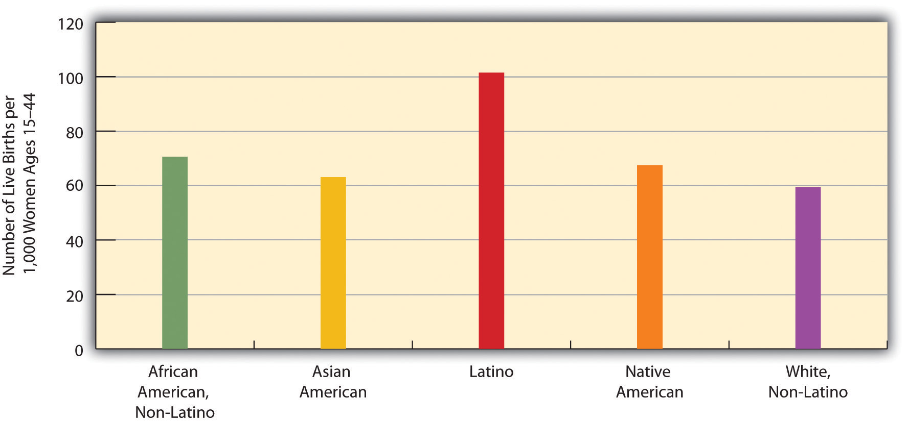
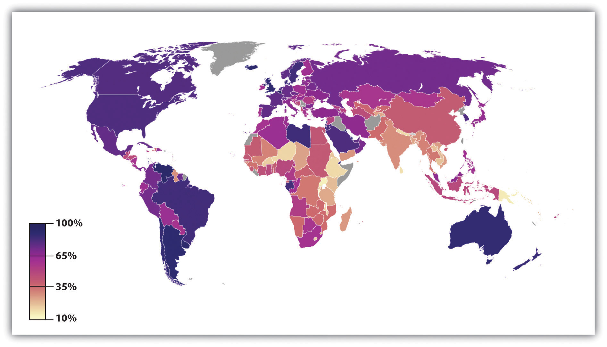

“New Leaders Can’t Shrink from Michigan Realities,” the headline said. The realities stemmed from the fact that Michigan’s population was shrinking. The state’s birth rate was 21% lower than its 1990 rate, and it now had 22,500 fewer fifth graders than ninth graders. Another reason for the population decline was that for the past decade many more people had been moving out of Michigan than moving in. Because many of those moving out were young, college-educated adults, they were taking with them hundreds of millions of dollars in paychecks that would have bolstered Michigan’s economy and tax revenue base. They were also leaving behind empty houses and apartments that were further depressing the state’s real estate market. The population decline had already forced several schools to close, with additional closings likely, and it was also increasing the percentage of Michigan residents in their older years who would need additional state services. The population decline has been especially severe in Detroit but has also been occurring in smaller cities and towns. (French & Wilkinson, 2009; Dzwonkowski, 2010)French, R., & Wilkinson, M. (2009, April 2). Leaving Michigan behind: Eight-year population exodus staggers state. The Detroit News. Retrieved from http://detnews.com/article/20090402/METRO/904020403/Leaving-Michigan-Behind--Eight-year-population-exodus-staggers-state; Dzwonkowski, R. (2010, September 19). New leaders can’t shrink from Michigan realities. Detroit Free Press, p. 2A.
As this news story from Michigan reminds us, population change often has weighty consequences throughout a society. Among other consequences, Michigan’s population decline has affected its economy, educational system, and services for its older residents. While Michigan and other states are shrinking, states in the southern and western regions of the nation are growing, with their large cities becoming even larger. This population growth also has consequences. For example, schools become more crowded, pressuring communities to hire more teachers and either enlarge existing schools or build new ones. It also puts strains on hospitals, social services, and many other sectors of society.
These considerations show that a change in one sector of society often affects other sectors of society. We cannot fully understand society without appreciating the sources, dynamics, and consequences of the changes societies undergo. This chapter’s discussion of population and urbanization is the first of three chapters that examine various kinds of social change. Chapter 20 "Social Change and the Environment" looks more broadly at social change before examining sociological aspects of the environment, while Chapter 21 "Collective Behavior and Social Movements" discusses collective behavior and social movements—fads, riots, protests, and the like—which collectively are another significant source of social change.
We have commented that population change is an important source of other changes in society. The study of population is so significant that it occupies a special subfield within sociology called demographyThe study of population growth and changes in population composition.. To be more precise, demography is the study of changes in the size and composition of population. It encompasses several concepts: fertility and birth rates, mortality and death rates, and migration (Weeks, 2012).Weeks, J. R. (2012). Population: An introduction to concepts and issues (11th ed.). Belmont, CA: Wadsworth. Let’s look at each of these briefly.
FertilityThe number of live births. refers to the number of live births. Demographers use several measures of fertility. One measure is the crude birth rateThe number of live births for every 1,000 people in a population in a given year., or the number of live births for every 1,000 people in a population in a given year. To determine the crude birth rate, the number of live births in a year is divided by the population size, and this result is then multiplied by 1,000. For example, in 2009 the United States had a population of about 307 million and roughly 4,136,000 births. Dividing the latter figure by the former figure gives us 0.0135 rounded off. We then multiply this quotient by 1,000 to yield a crude birth rate of 13.5 births per 1,000 population (U.S. Census Bureau, 2010).U.S. Census Bureau. (2010). Statistical abstract of the United States: 2010. Washington, DC: U.S. Government Printing Office. Retrieved from http://www.census.gov/compendia/statab We call this a “crude” birth rate because the denominator, population size, consists of the total population, not just the number of women or even the number of women of childbearing age (commonly considered 15–44 years).
A second measure is the general fertility rateThe number of live births per 1,000 women aged 15–44 years. (also just called the fertility rate or birth rate), or the number of live births per 1,000 women aged 15–44 (i.e., of childbearing age). This is calculated in a manner similar to that for the crude fertility rate, but in this case the number of births is divided by the number of women aged 15–44 before multiplying by 1,000. The U.S. general fertility rate for 2009 was about 65.5 (i.e., 65.5 births per 1,000 women aged 15–44; Tejada-Vera & Sutton, 2010).Tejada-Vera, B., & Sutton, P. D. (2010). Births, marriages, divorces, and deaths: Provisional data for 2009. National vital statistics reports, 58(25), 1–6.
A third measure is the total fertility rateThe number of children an average woman is expected to have in her lifetime, sometimes expressed as the number of children an average 1,000 women are expected to have in their lifetimes., or the number of children an average woman is expected to have in her lifetime. This measure often appears in the news media and is more easily understood by the public than either of the first two measures. In 2008, the U.S. total fertility rate was about 2.09. Sometimes the total fertility rate is expressed as the average number of births that an average group of 1,000 women would be expected to have. In this case, the average number of children that one woman is expected to have is simply multiplied by 1,000. Using this latter calculation, the U.S. total fertility rate in 2008 was about 2,090 (i.e., an average group of 1,000 women would be expected to have, in their lifetimes, 2,090 children; Hamilton, Martin, & Ventura, 2010).Hamilton, B. E., Martin, J. A., & Ventura, S. J. (2010). Births: Preliminary data for 2008. National vital statistics reports, 58(16), 1–18.
As Figure 19.1 "U.S. General Fertility Rate, 1920–2007" indicates, the U.S. general fertility rate has changed a lot since 1920, dropping from 101 (per 1,000 women aged 15–44) in 1920 to 70 in 1935, during the Great Depression, before rising afterward until 1955. (Note the very sharp increase from 1945 to 1955, as the post–World War II baby boom began.) The fertility rate then fell steadily after 1960 until the 1970s but has remained rather steady since then, fluctuating only slightly between 65 and 70 per 1,000 women aged 15–44.
Figure 19.1 U.S. General Fertility Rate, 1920–2007

Sources: Data from Hamilton, B. E., Martin, J. A., & Ventura, S. J. (2010). Births: Preliminary data for 2008. National vital statistics reports, 58(16), 1–18; Martin, J. A., Hamilton, B. E., Sutton, P. D., Ventura, S. J., Menacker, F., Kirmeyer, S., & Mathews, T. J. (2009). Births: Final data for 2006. National vital statistics reports, 57(7), 1–102; U.S. Census Bureau. (1951). Statistical abstract of the United States: 1951. Washington, DC: U.S. Government Printing Office.
The fertility rate varies by race and ethnicity. As Figure 19.2 "Race, Ethnicity, and U.S. Fertility Rates, 2006" shows, it is lowest for non-Latina white women and the highest for Latina women. Along with immigration, the high fertility rate of Latina women has fueled the large growth of the Latino population. Latinos now account for about 16% of the U.S. population, and their proportion is expected to reach more than 30% by 2050 (U.S. Census Bureau, 2010).U.S. Census Bureau. (2010). Statistical abstract of the United States: 2010. Washington, DC: U.S. Government Printing Office. Retrieved from http://www.census.gov/compendia/statab
Figure 19.2 Race, Ethnicity, and U.S. Fertility Rates, 2006
Source: Data from U.S. Census Bureau. (2010). Statistical abstract of the United States: 2010. Washington, DC: U.S. Government Printing Office. Retrieved from http://www.census.gov/compendia/statab.
The fertility rate of teenagers is a special concern because of their age. Although it is still a rate that most people wish were lower, it dropped steadily through the 1990s, before leveling off after 2002 and rising slightly afterward (see Figure 19.3 "U.S. Teenage Fertility Rate, 1990–2006"). Although most experts attribute this drop to public education campaigns and increased contraception, the United States still has the highest rate of teenage pregnancy and fertility of any industrial nation (Eckholm, 2009).Eckholm, E. (2009, March 18). ’07 U.S. births break baby boom record. The New York Times, p. A14. Teenage fertility again varies by race and ethnicity, with Latina teenagers having the highest fertility rates and Asian American teenagers the lowest (see Figure 19.4 "Race, Ethnicity, and U.S. Teenage Fertility Rates, 2007").
Figure 19.3 U.S. Teenage Fertility Rate, 1990–2006

Source: Data from Martin, J. A., Hamilton, B. E., Sutton, P. D., Ventura, S. J., Menacker, F., Kirmeyer, S., & Mathews, T. J. (2009). Births: Final data for 2006. National vital statistics reports, 57(7), 1–102.
Figure 19.4 Race, Ethnicity, and U.S. Teenage Fertility Rates, 2007

Source: Data from U.S. Census Bureau. (2010). Statistical abstract of the United States: 2010. Washington, DC: U.S. Government Printing Office. Retrieved from http://www.census.gov/compendia/statab.
Fertility rates also differ around the world and are especially high in poor nations (see Figure 19.5 "Crude Birth Rates Around the World, 2008 (Number of Births per 1,000 Population)"). Demographers identify several reasons for these high rates (Weeks, 2012).Weeks, J. R. (2012). Population: An introduction to concepts and issues (11th ed.). Belmont, CA: Wadsworth.
Figure 19.5 Crude Birth Rates Around the World, 2008 (Number of Births per 1,000 Population)

Source: Adapted from http://en.wikipedia.org/wiki/File:Birth_rate_figures_for_countries.PNG.
Poor nations have higher birth rates for several reasons. One reason is the agricultural economies typical of these nations. In these economies, children are an important economic resource, and families will ordinarily try to have as many children as possible.
Source: Photo courtesy of R. Kalden, Voice of America, http://commons.wikimedia.org/wiki/File:Children_near_ renovation_of_Jawaharlal_Nehru_Stadium_in_New_ Delhi_2010-02-24.JPG.
First, poor nations are usually agricultural ones. In agricultural societies, children are an important economic resource, as a family will be more productive if it has more children. This means that families will ordinarily try to have as many children as possible. Second, infant and child mortality rates are high in these nations. Because parents realize that one or more of their children may die before adulthood, they have more children to “make up” for the anticipated deaths. A third reason is that many parents in low-income nations prefer sons to daughters, and, if a daughter is born, they “try again” for a son. Fourth, traditional gender roles are often very strong in poor nations, and these roles include the belief that women should be wives and mothers above all. With this ideology in place, it is not surprising that women will have several children. Finally, contraception is uncommon in poor nations. Without contraception, many more pregnancies and births certainly occur. For all of these reasons, then, fertility is much higher in poor nations than in rich nations.
MortalityThe number of deaths. is the flip side of fertility and refers to the number of deaths. Demographers measure it with the crude death rateThe number of deaths for every 1,000 people in a population in a given year., the number of deaths for every 1,000 people in a population in a given year. To determine the crude death rate, the number of deaths is divided by the population size, and this result is then multiplied by 1,000. In 2006 the United States had slightly more than 2.4 million deaths for a crude death rate of 8.1 deaths for every 1,000 persons. We call this a “crude” death rate because the denominator, population size, consists of the total population and does not take its age distribution into account. All things equal, a society with a higher proportion of older people should have a higher crude death rate. Demographers often calculate age-adjusted death rates that adjust for a population’s age distribution.
Another demographic concept is migrationThe movement of people into or out of specific regions., the movement of people into and out of specific regions. Since the dawn of human history, people have migrated in search of a better life, and many have been forced to migrate by ethnic conflict or the slave trade.
Several classifications of migration exist. When people move into a region, we call it in-migration, or immigration; when they move out of a region, we call it out-migration, or emigration. The in-migration rate is the number of people moving into a region for every 1,000 people in the region, while the out-migration rate is the number of people moving from the region for every 1,000 people. The difference between the two is the net migration rate (in-migration minus out-migration). Recalling the news story about Michigan that began this chapter, Michigan has had a net migration of less than zero, as its out-migration has been greater than its in-migration.
Migration can also be either domestic or international in scope. Domestic migration happens within a country’s national borders, as when retired people from the northeastern United States move to Florida or the Southwest. International migration happens across national borders. When international immigration is heavy, as it has been into the United States and Western Europe in the last few decades, the effect on population growth and other aspects of national life can be significant. Domestic migration can also have a large impact. The great migration of African Americans from the South into northern cities during the first half of the 20th century changed many aspects of those cities’ lives (Berlin, 2010).Berlin, I. (2010). The making of African America: The four great migrations. New York, NY: Viking. Meanwhile, the movement during the past few decades of northerners into the South and Southwest also had quite an impact: the housing market initially exploded, for example, and traffic increased.
Now that you are familiar with some basic demographic concepts, we can discuss population growth and decline in more detail. Three of the factors just discussed determine changes in population size: fertility (crude birth rate), mortality (crude death rate), and net migration. The natural growth rateThe difference between the crude birth rate and the crude death rate. is simply the difference between the crude birth rate and the crude death rate. The U.S. natural growth rate is about 0.6% (or 6 per 1,000 people) per year (Rosenberg, 2009).Rosenberg, M. (2009). Population growth rates. Retrieved from http://geography.about.com/od/populationgeography/a/populationgrow.htm When immigration is also taken into account, the total population growth rate has been almost 1.0% per year (Jacobsen & Mather, 2010).Jacobsen, L. A., & Mather, M. (2010). U.S. economic and social trends since 2000. Population Bulletin, 65(1), 1–20.
Figure 19.6 "International Annual Population Growth Rates (%), 2005–2010" depicts the annual population growth rate (including both natural growth and net migration) of all the nations in the world. Note that many African nations are growing by at least 3% per year or more, while most European nations are growing by much less than 1% or are even losing population, as discussed earlier. Overall, the world population is growing by about 80 million people annually.
Figure 19.6 International Annual Population Growth Rates (%), 2005–2010

Source: Adapted from http://en.wikipedia.org/wiki/File:Population_growth_rate_world_2005-2010_UN.PNG.
To determine how long it takes for a nation to double its population size, divide the number 70 by its population growth rate. For example, if a nation has an annual growth rate of 3%, it takes about 23.3 years (70 ÷ 3) for that nation’s population size to double. As you can see from the map in Figure 19.6 "International Annual Population Growth Rates (%), 2005–2010", several nations will see their population size double in this time span if their annual growth continues at its present rate. For these nations, population growth will be a serious problem if food and other resources are not adequately distributed.
Demographers use their knowledge of fertility, mortality, and migration trends to make projections about population growth and decline several decades into the future. Coupled with our knowledge of past population sizes, these projections allow us to understand population trends over many generations. One clear pattern emerges from the study of population growth. When a society is small, population growth is slow because there are relatively few adults to procreate. But as the number of people grows over time, so does the number of adults. More and more procreation thus occurs every single generation, and population growth then soars in a virtual explosion.
We saw evidence of this pattern when we looked at world population growth. When agricultural societies developed some 12,000 years ago, only about 8 million people occupied the planet. This number had reached about 300 million about 2,100 years ago, and by the 15th century it was still only about 500 million. It finally reached 1 billion by about 1850 and by 1950, only a century later, had doubled to 2 billion. Just 50 years later, it tripled to more than 6.8 billion, and it is projected to reach more than 9 billion by 2050 (U.S. Census Bureau, 2010)U.S. Census Bureau. (2010). Statistical abstract of the United States: 2010. Washington, DC: U.S. Government Printing Office. Retrieved from http://www.census.gov/compendia/statab (see Figure 19.7 "Total World Population, 1950–2050").
Figure 19.7 Total World Population, 1950–2050
Source: Data from U.S. Census Bureau. (2010). Statistical abstract of the United States: 2010. Washington, DC: U.S. Government Printing Office. Retrieved from http://www.census.gov/compendia/statab.
Eventually, however, population growth begins to level off after exploding, as explained by demographic transition theory, discussed later. We see this in the bottom half of Figure 19.7 "Total World Population, 1950–2050", which shows the average annual growth rate for the world’s population. This rate has declined over the last few decades and is projected to further decline over the next four decades. This means that while the world’s population will continue to grow during the foreseeable future, it will grow by a smaller rate as time goes by. As Figure 19.6 "International Annual Population Growth Rates (%), 2005–2010" suggested, the growth that does occur will be concentrated in the poor nations in Africa and some other parts of the world. Still, even there the average number of children a woman has in her lifetime dropped from six a generation ago to about three today.
Past and projected sizes of the U.S. population appear in Figure 19.8 "Past and Projected Size of the U.S. Population, 1950–2050 (in Millions)". The U.S. population is expected to number about 440 million people by 2050.
Figure 19.8 Past and Projected Size of the U.S. Population, 1950–2050 (in Millions)

Source: Data from U.S. Census Bureau. (2010). Statistical abstract of the United States: 2010. Washington, DC: U.S. Government Printing Office. Retrieved from http://www.census.gov/compendia/statab.
Thomas Malthus, an English economist who lived about 200 years ago, wrote that population increases geometrically while food production increases only arithmetically. These understandings led him to predict mass starvation.
The numbers just discussed show that the size of the United States and world populations has increased tremendously in just a few centuries. Not surprisingly, people have worried about population growth and specifically overpopulation at least since the 18th century. One of the first to warn about population growth was Thomas Malthus (1766–1834), an English economist, who said that population increases geometrically (2, 4, 8, 16, 32, 64, 128, 256, 512, 1024…). If you expand this list of numbers, you will see that they soon become overwhelmingly large in just a few more “generations.” Malthus (1798/1926)Malthus, T. R. (1926). First essay on population. London, England: Macmillan. (Original work published 1798) said that food production increases only arithmetically (1, 2, 3, 4, 5, 6…) and thus could not hope to keep up with the population increase, and he predicted that mass starvation would be the dire result.
During the 1970s, population growth became a major issue in the United States and some other nations. Zero population growth, or ZPG, was a slogan often heard. There was much concern over the rapidly growing population in the United States and, especially, around the world, and there was fear that our “small planet” could not support massive increases in the number of people (Ehrlich, 1969).Ehrlich, P. R. (1969). The population bomb. San Francisco, CA: Sierra Club. Some of the most dire predictions of the time warned of serious food shortages by the end of the century.
Fortunately, Malthus and ZPG advocates were wrong to some degree. Although population levels have certainly soared, the projections in Figure 19.7 "Total World Population, 1950–2050" show that the rate of increase is slowing. Among other factors, the development of more effective contraception, especially the birth control pill, has limited population growth in the industrial world and, increasingly, in poorer nations. Food production has also increased by a much greater amount than Malthus and ZPG advocates predicted. Concern about overpopulation growth has weakened, as the world’s resources seem to be standing up to population growth. Widespread hunger in Africa and other regions does exist, with hundreds of millions of people suffering from hunger and malnutrition, but many experts attribute this problem not to overpopulation and lack of food but rather to problems in distributing the sufficient amount of food that exists. The “Sociology Making a Difference” box discusses these problems.
Another factor might have played a role in weakening advocacy for ZPG: criticism by people of color that ZPG was directed largely at their ranks and smacked of racism. The call for population control, they said, was a disguised call for controlling the growth of their own populations and thus reducing their influence (Kuumba, 1993).Kuumba, M. B. (1993). Perpetuating neo-colonialism through population control: South Africa and the United States. Africa Today, 40(3), 79–85. Although the merits of this criticism have been debated, it may have still served to mute ZPG advocacy.
World Hunger and the Scarcity Fallacy
A popular belief is that world hunger exists because there is too little food to feed too many people in poor nations in Africa, Asia, and elsewhere. Sociologists Stephen J. Scanlan, J. Craig Jenkins, and Lindsey Peterson (2010)Scanlan, S. J., Jenkins, J. C., & Peterson, L. (2010). The scarcity fallacy. Contexts, 9(1), 34–39. call this belief the “scarcity fallacy.” According to these authors, “The conventional wisdom is that world hunger exists primarily because of natural disasters, population pressure, and shortfalls in food production” (p. 35). However, this conventional wisdom is mistaken, as world hunger stems not from a shortage of food but from the inability to deliver what is actually a sufficient amount of food to the world’s poor. As Scanlan and colleagues note,
A good deal of thinking and research in sociology suggests that world hunger has less to do with the shortage of food than with a shortage of affordable or accessible food. Sociologists have found that social inequalities, distribution systems, and other economic and political factors create barriers to food access. (p. 35)
This sociological view has important implications for how the world should try to reduce global hunger, say these authors. International organizations such as the World Bank and several United Nations agencies have long believed that hunger is due to food scarcity, and this belief underlies the typical approaches to reducing world hunger that focus on increasing food supplies with new technologies and developing more efficient methods of delivering food. But if food scarcity is not a problem, then other approaches are necessary.
Scanlan and colleagues argue that food scarcity is, in fact, not the problem that international agencies and most people believe it to be:
The bigger problem with emphasizing food supply as the problem, however, is that scarcity is largely a myth. On a per capita basis, food is more plentiful today than any other time in human history.…[E]ven in times of localized production shortfalls or regional famines there has long been a global food surplus. (p. 35)
If the problem is not a lack of food, then what is the problem? Scanlan and colleagues argue that the real problem is a lack of access to food and a lack of equitable distribution of food: “Rather than food scarcity, then, we should focus our attention on the persistent inequalities that often accompany the growth in food supply” (p. 36).
What are these inequalities? Recognizing that hunger is especially concentrated in the poorest nations, the authors note that these nations lack the funds to import the abundant food that does exist. These nations’ poverty, then, is one inequality that leads to world hunger, but gender and ethnic inequalities are also responsible. For example, women around the world are more likely than men to suffer from hunger, and hunger is more common in nations with greater rates of gender inequality (as measured by gender differences in education and income, among other criteria). Hunger is also more common among ethnic minorities not only in poor nations but also in wealthier nations. In findings from their own research, these sociologists add, hunger lessens when nations democratize, when political rights are protected, and when gender and ethnic inequality is reduced.
If inequality underlies world hunger, they add, then efforts to reduce world hunger will succeed only to the extent that they recognize the importance of inequality in this regard: “To get at inequality, policy must give attention to democratic governance and human rights, fixing the politics of food aid, and tending to the challenges posed by the global economy” (p. 38). For this to happen, they say, food must be upheld as a “fundamental human right.” More generally, world hunger cannot be effectively reduced unless and until ethnic and gender inequality is reduced. Scanlan and colleagues conclude,
The challenge, in short, is to create a more equitable and just society in which food access is ensured for all. Food scarcity matters. However, it is rooted in social conditions and institutional dynamics that must be the focus of any policy innovations that might make a real difference. (p. 39)
In calling attention to the myth of food scarcity and the inequalities that contribute to world hunger, Scanlan and colleagues point to better strategies for addressing this significant international problem. Once again, sociology is making a difference.
Other dynamics also explain why population growth did not rise at the geometric rate that Malthus had predicted and is even slowing. The view explaining these dynamics is called demographic transition theoryA theory that links population growth to the level of technological development across three stages of social evolution. (Weeks, 2012),Weeks, J. R. (2012). Population: An introduction to concepts and issues (11th ed.). Belmont, CA: Wadsworth. mentioned earlier. This theory links population growth to the level of technological development across three stages of social evolution. In the first stage, coinciding with preindustrial societies, the birth rate and death rate are both high. The birth rate is high because of the lack of contraception and the several other reasons cited earlier for high fertility rates, and the death rate is high because of disease, poor nutrition, lack of modern medicine, and other problems. These two high rates cancel each other out, and little population growth occurs.
In the second stage, coinciding with the development of industrial societies, the birth rate remains fairly high, owing to the lack of contraception and a continuing belief in the value of large families, but the death rate drops because of several factors, including increased food production, better sanitation, and improved medicine. Because the birth rate remains high but the death rate drops, population growth takes off dramatically.
In the third stage, the death rate remains low, but the birth rate finally drops as families begin to realize that large numbers of children in an industrial economy are more of a burden than an asset. Another reason for the drop is the availability of effective contraception. As a result, population growth slows, and, as we saw earlier, it has become quite low or even gone into a decline in several industrial nations.
Demographic transition theory, then, gives us more reason to be cautiously optimistic regarding the threat of overpopulation: as poor nations continue to modernize—much as industrial nations did 200 years ago—their population growth rates should start to decline. Still, population growth rates in poor nations continue to be high, and, as the “Sociology Making a Difference” box discussed, inequalities in food distribution allow rampant hunger to persist. Hundreds of thousands of women die in poor nations each year during pregnancy and childbirth. Reduced fertility would save their lives, in part because their bodies would be healthier if their pregnancies were spaced farther apart (Schultz, 2008).Schultz, T. P. (2008). Population policies, fertility, women’s human capital, and child quality. In T. P. Schultz & J. Strauss (Eds.), Handbook of development economics (Vol. 4, pp. 3249–3303). Amsterdam, Netherlands: North-Holland, Elsevier. Although world population growth is slowing, then, it is still growing too rapidly in much of the developing and least developed worlds. To reduce it further, more extensive family-planning programs are needed, as is economic development in general.
Still another reason for the reduced concern over population growth is that birth rates in many industrial nations have slowed considerably. Some nations are even experiencing population declines, while several more are projected to have population declines by 2050 (Goldstein, Sobotka, & Jasilioniene, 2009).Goldstein, J. R., Sobotka, T., & Jasilioniene, A. (2009). The end of “lowest-low” fertility? Population & Development Review, 35(4), 663–699. doi:10.1111/j.1728–4457.2009.00304.x For a country to maintain its population, the average woman needs to have 2.1 children, the replacement level for population stability. But several industrial nations, not including the United States, are far below this level. Increased birth control is one reason for their lower fertility rates but so are decisions by women to stay in school longer, to go to work right after their schooling ends, and to not have their first child until somewhat later.

Spain is one of several European nations that have been experiencing a population decline because of lower birth rates. Like some other nations, Spain has adopted pronatalist policies to encourage people to have more children; it provides 2,500 euros, about $3,400, for each child.
Source: Photo courtesy of Sergi Larripa, http://commons.wikimedia.org/wiki/File:BCN01.JPG.
Ironically, these nations’ population declines have begun to concern demographers and policymakers (Shorto, 2008).Shorto, R. (2008, June 2). No babies? The New York Times Magazine. Retrieved from http://www.nytimes.com/2008/06/29/magazine/29Birth-t.html?scp=1&sq=&st=nyt Because people in many industrial nations are living longer while the birth rate drops, these nations are increasingly having a greater proportion of older people and a smaller proportion of younger people. In several European nations, there are more people 61 or older than 19 or younger. As this trend continues, it will become increasingly difficult to take care of the health and income needs of so many older persons, and there may be too few younger people to fill the many jobs and provide the many services that an industrial society demands. The smaller labor force may also mean that governments will have fewer income tax dollars to provide these services.
To deal with these problems, several governments have initiated pronatalistReferring to policies that encourage women to have children. policies aimed at encouraging women to have more children. In particular, they provide generous child-care subsidies, tax incentives, and flexible work schedules designed to make it easier to bear and raise children, and some even provide couples outright cash payments when they have an additional child. Russia in some cases provides the equivalent of about $9,000 for each child beyond the first, while Spain provides 2,500 euros (equivalent to about $3,400) for each child (Haub, 2009).Haub, C. (2009). Birth rates rising in some low birth-rate countries. Washington, DC: Population Reference Bureau. Retrieved from http://www.prb.org/Articles/2009/fallingbirthrates.aspx
An important aspect of social change and population growth over the centuries has been urbanizationThe rise and growth of cities., or the rise and growth of cities. Urbanization has had important consequences for many aspects of social, political, and economic life (Kleniewski & Thomas, 2011).Kleniewski, N., & Thomas, A. R. (2011). Cities, change, and conflict (4th ed.). Belmont, CA: Wadsworth.
The earliest cities developed in ancient times after the rise of horticultural and pastoral societies made it possible for people to stay in one place instead of having to move around to find food. Because ancient cities had no sanitation facilities, people typically left their garbage and human waste in the city streets or just outside the city wall (which most cities had for protection from possible enemies); this poor sanitation led to rampant disease and high death rates. Some cities eventually developed better sanitation procedures, including, in Rome, a sewer system (Smith, 2003).Smith, M. L. (Ed.). (2003). The social construction of ancient cities. Washington, DC: Smithsonian Institution Press.
Cities became more numerous and much larger during industrialization, as people moved to be near factories and other sites of industrial production. First in Europe and then in the United States, people crowded together as never before into living conditions that were often decrepit. Lack of sanitation continued to cause rampant disease, and death rates from cholera, typhoid, and other illnesses were high. In addition, crime rates soared, and mob violence became quite common (Feldberg, 1998).Feldberg, M. (1998). Urbanization as a cause of violence: Philadelphia as a test case. In A. F. Davis & M. H. Haller (Eds.), The peoples of Philadelphia: A history of ethnic groups and lower-class life, 1790–1940 (pp. 53–69). Philadelphia: University of Pennsylvania Press.

During the early 20th century, social scientists at the University of Chicago began to study urban life in general and life in Chicago in particular. Although some of these scholars were very dismayed by the negative aspects of city life, other scholars emphasized several positive aspects of city life.
Are cities good or bad? We asked a similar question—is modernization good or bad?—earlier in this chapter, and the answer here is similar as well: cities are both good and bad. They are sites of innovation, high culture, population diversity, and excitement, but they are also sites of high crime, impersonality, and other problems.
In the early 20th century, a group of social scientists at the University of Chicago established a research agenda on cities that is still influential today (Bulmer, 1984).Bulmer, M. (1984). The Chicago school of sociology: Institutionalization, diversity, and the rise of sociological research. Chicago, IL: University of Chicago Press. Most notably, they began to study the effects of urbanization on various aspects of city residents’ lives in what came to be called the human ecology schoolThe study by early University of Chicago sociologists of the effects of urbanization on various aspects of city residents’ lives. (Park, Burgess, & McKenzie, 1925).Park, R. E., Burgess, E. W., & McKenzie, R. (1925). The city. Chicago, IL: University of Chicago Press. One of their innovations was to divide Chicago into geographical regions, or zones, and to analyze crime rates and other behavioral differences among the zones. They found that crime rates were higher in the inner zone, or central part of the city, where housing was crowded and poverty was common, and were lower in the outer zones, or the outer edges of the city, where houses were spread farther apart and poverty was much lower. Because they found these crime rate differences changed over time even as the ethnic backgrounds of people in these zones, they assumed that the social and physical features of the neighborhoods were affecting their crime rates (Shaw & McKay, 1942).Shaw, C. R., & McKay, H. D. (1942). Juvenile delinquency and urban areas. Chicago, IL: University of Chicago Press. Their work is still useful today, as it helps us realize that the social environment, broadly defined, can affect our attitudes and behavior. This theme, of course, lies at the heart of the sociological perspective.
One of the most notable Chicago sociologists was Louis Wirth (1897–1952), who, in a well-known essay entitled “Urbanism as a Way of Life” (Wirth, 1938),Wirth, L. (1938). Urbanism as a way of life. American Journal of Sociology, 44, 3–24. discussed several differences between urban and rural life. In one such difference, he said that urban residents are more tolerant than rural residents of nontraditional attitudes, behaviors, and lifestyles, in part because they are much more exposed than rural residents to these nontraditional ways. Supporting Wirth’s hypothesis, contemporary research finds that urban residents indeed hold more tolerant views on several kinds of issues (Moore & Ovadia, 2006).Moore, L. M., & Ovadia, S. (2006). Accounting for spatial variation in tolerance: The effects of education and religion. Social Forces, 84(4), 2205–2222.
Life in U.S. cities today reflects the dual view just outlined. On the one hand, many U.S. cities are vibrant places, filled with museums and other cultural attractions, nightclubs, theaters, and restaurants and populated by people from many walks of life and from varied racial and ethnic and national backgrounds. Many college graduates flock to cities, not only for their employment opportunities but also for their many activities and the sheer excitement of living in a metropolis. On the other hand, many U.S. cities are also filled with abject poverty, filthy and dilapidated housing, high crime rates, traffic gridlock, and dirty air. Many Americans would live nowhere but a city, and many would live anywhere but a city. Cities arouse strong opinions pro and con, and for good reason, because there are many things both to like and to dislike about cities.
The quality of city life depends on many factors, but one of the most important factors is a person’s social background: social class, race/ethnicity, gender, age, and sexual orientation. As earlier chapters documented, these dimensions of our social backgrounds often yield many kinds of social inequalities, and the quality of life that city residents enjoy depends heavily on these dimensions. For example, residents who are white and wealthy have the money and access to enjoy the best that cities have to offer, while those who are poor and of color typically experience the worst aspects of city life. Because of fear of rape and sexual assault, women often feel more constrained than men from traveling freely throughout a city and being out late at night; older people also often feel more constrained because of physical limitations and fear of muggings; and gays and lesbians are still subject to physical assaults stemming from homophobia. The type of resident we are, then, in terms of our sociodemographic profile affects what we experience in the city and whether that experience is positive or negative.
This brief profile of city residents obscures other kinds of differences among residents regarding their lifestyles and experiences. A classic typology of urban dwellers by sociologist Herbert Gans (1962)Gans, H. J. (1962). The urban villagers: Group and class in the life of Italian-Americans. New York, NY: Free Press. is still useful today in helping to understand the variety of lives found in cities. Gans identified five types of city residents.
The first type is cosmopolites. These are people who live in a city because of its cultural attractions, restaurants, and other features of the best that a city has to offer. Cosmopolites include students, writers, musicians, and intellectuals. Unmarried and childless individuals and couples are the second type; they live in a city to be near their jobs and to enjoy the various kinds of entertainment found in most cities. If and when they marry or have children, respectively, many migrate to the suburbs to raise their families. The third type is ethnic villagers, who are recent immigrants and members of various ethnic groups who live among each other in certain neighborhoods. These neighborhoods tend to have strong social bonds and more generally a strong sense of community. Gans wrote that all of these three types generally find the city inviting rather than alienating and have positive experiences far more often than negative ones.
In contrast, two final types of residents find the city alienating and experience a low quality of life. The first of these two types, and the fourth overall, is the deprived. These are people with low levels of formal education who live in poverty or near-poverty and are unemployed, are underemployed, or work at low wages. They live in neighborhoods filled with trash, broken windows, and other signs of disorder. They commit high rates of crime and also have high rates of victimization by crime. The final type is the trapped. These are residents who, as their name implies, might wish to leave their neighborhoods but are unable to do so for several reasons: they may be alcoholics or drug addicts, they may be elderly and disabled, or they may be jobless and cannot afford to move to a better area.
By definition, cities consist of very large numbers of people living in a relatively small amount of space. Some of these people have a good deal of money, but many people, and in some cities most people, have very little money. Cities must provide many kinds of services for all their residents, and certain additional services for their poorer residents. These basic facts of city life make for common sets of problems affecting cities throughout the nation, albeit to varying degrees, with some cities less able than others to address these problems.
One evident problem is fiscal: cities typically have serious difficulties in paying for basic services such as policing, public education, trash removal, street maintenance, and, in cold climates, snow removal, and in providing certain services for their residents who are poor or disabled or who have other conditions. The fiscal difficulties that cities routinely face became even more serious with the onset of the nation’s deep recession in 2009, as the term fiscal crisis became a more accurate description of the harsh financial realities that cities were now facing (McNichol, 2009).McNichol, D. A. (2009, May 1). Revenue loss putting cities in fiscal vise. The New York Times, p. NJ1.
Another problem is crowding. Cities are crowded in at least two ways. The first involves residential crowding: large numbers of people living in a small amount of space. City streets are filled with apartment buildings, condominiums, row houses, and other types of housing, and many people live on any one city block. The second type of crowding is household crowding: dwelling units in cities are typically small because of lack of space, and much smaller than houses in suburbs or rural areas. This forces many people to live in close quarters within a particular dwelling unit. Either type of crowding is associated with higher levels of stress, depression, and aggression (Regoeczi, 2008).Regoeczi, W. C. (2008). Crowding in context: An examination of the differential responses of men and women to high-density living environments. Journal of Health and Social Behavior, 49, 254–268.
A third problem involves housing. Here there are several related issues. Much urban housing is substandard and characterized by such problems as broken windows, malfunctioning heating systems, peeling paint, and insect infestation. At the same time, adequate housing is not affordable for many city residents, as housing prices in cities can be very high, and the residents’ incomes are typically very low. Cities thus have a great need for adequate, affordable housing.
Another housing issue concerns racial segregation. Although federal law prohibits segregated housing, cities across the country are nonetheless highly segregated by race, with many neighborhoods all or mostly African American. Sociologists Douglas S. Massey and Nancy A. Denton (1998)Massey, D. S., & Denton, N. A. (1998). American apartheid: Segregation and the making of the underclass. Cambridge, MA: Harvard University Press. termed this situation “American apartheid.” They said that these segregated neighborhoods result from a combination of several factors, including (a) “white flight” into suburbs, (b) informal—and often illegal—racially discriminatory actions that make it difficult for African Americans to move into white neighborhoods (such as real estate agents falsely telling black couples that no houses are available in a particular neighborhood), and (c) a general lack of income and other resources that makes it very difficult for African Americans to move from segregated neighborhoods.
Massey and Denton argued that residential segregation worsens the general circumstances in which many urban African Americans live. Several reasons account for this effect. As whites flee to the suburbs, the people left behind are much poorer. The tax base of cities suffers accordingly, and along with it the quality of city schools, human services, and other social functions. All these problems help keep the crime rate high and perhaps even raise it further. Because segregated neighborhoods are poor and crime-ridden, businesses do not want to invest in them, and employment opportunities are meager. This fact worsens conditions in segregated neighborhoods even further. Consequently, concluded Massey and Denton, racial segregation helps perpetuate the urban “underclass” of people who live jobless in deep poverty and decaying neighborhoods.
Other research supports this conclusion. As a recent review summarized the evidence,
Whether voluntary or involuntary, living in racially segregated neighborhoods has serious implications for the present and future mobility opportunities of those who are excluded from desirable areas. Where we live affects our proximity to good job opportunities, educational quality, and safety from crime (both as victim and as perpetrator), as well as the quality of our social networks. (Charles, 2003, pp. 167–168)Charles, C. Z. (2003). The dynamics of racial residential segregation. Annual Review of Sociology, 29, 167–207.
To improve the socioeconomic status and living circumstances of African Americans, then, it is critical that residential segregation be reduced.
A fourth problem of city life is traffic. Gridlock occurs in urban areas, not rural ones, because of the sheer volume of traffic and the sheer number of intersections controlled by traffic lights or stop signs. Some cities have better public transportation than others, but traffic and commuting are problems that urban residents experience every day (see the “Learning From Other Societies” box).
Trains, Not Planes (or Cars): The Promise of High-Speed Rail
One of the costs of urbanization and modern life is traffic. Our streets and highways are clogged with motor vehicles, and two major consequences of so much traffic are air pollution and tens of thousands of deaths and injuries from vehicular accidents. One way that many other nations, including China, Germany, Japan, and Spain, have tried to lessen highway traffic in recent decades is through the construction of high-speed rail lines. According to one news report, the U.S. rail system “remains a caboose” compared to the high-speed system found in much of the rest of the world (Knowlton, 2009, p. A16).Knowlton, B. (2009, April 16). Obama seeks high-speed rail system across U.S. The New York Times, p. A16. Japan has one line that averages 180 mph, while Europe’s high-speed trains average 130 mph, with some exceeding 200 mph. These speeds are far faster than the 75 mph typical of Amtrak’s speediest Acela line in the northeastern United States, which must usually go much more slowly than its top speed of 150 mph because of inferior tracking and interference by other trains. Although the first so-called bullet train appeared in Japan about 40 years ago, the United States does not yet have even one such train.
The introduction of high-speed rail in other nations was meant to reduce highway traffic and, in turn, air pollution and vehicular injuries and deaths. Another goal was to reduce air traffic between cities, as high-speed trains emit only one-fourth the carbon dioxide per passengers as planes do while transporting 8 times as many passengers in a given distance (Burnett, 2009).Burnett, V. (2009, May 29). Europe’s travels with high-speed rail hold lessons for U.S. planners: The Spanish experience has been transformative but far from inexpensive. International Herald Tribune, p. 16. A final goal was to aid the national economies of the nations that introduced high-speed rail. The evidence indicates that these goals have been accomplished.
For example, Spain built its first high-speed line, between Madrid and Seville, in 1992 and now has rail reaching about 1,200 miles between its north and south coasts. The rail network has increased travel for work and leisure and thus helped Spain’s economy. The high-speed trains are also being used instead of planes by the vast majority of people who travel between Madrid and either Barcelona or Seville.
China, the world’s most populous nation but far from the richest, has recently opened, or plans to open during the next few years, several dozen high-speed rail lines. Its fastest train averages more than 200 mph and travels 664 miles between two cities, Guangzhou and Wuhan, in just over 3 hours. The Acela takes longer to travel between Boston and New York, a distance of only 215 miles. A news report summarized the economic benefits for China:
Indeed, the web of superfast trains promises to make China even more economically competitive, connecting this vast country—roughly the same size as the United States—as never before, much as the building of the Interstate highway system increased productivity and reduced costs in America a half-century ago. (Bradsher, 2010, p. B1)Bradsher, K. (2010, February 12). China sees growth engine in a web of fast trains. The New York Times, p. B1.
In April 2009 President Barack Obama announced that $8 billion in federal stimulus funding would be made available for the construction of high-speed rail lines in certain parts of the United States to connect cities between 100 and 600 miles apart. The president said,
Imagine whisking through towns at speeds over 100 miles an hour, walking only a few steps to public transportation, and ending up just blocks from your destination. It is happening right now; it’s been happening for decades. The problem is, it’s been happening elsewhere, not here. (Knowlton, 2009)Knowlton, B. (2009, April 16). Obama seeks high-speed rail system across U.S. The New York Times, p. A16.
As large as it is, the $8 billion figure announced by Obama pales in comparison with an estimated $140 billion that Spain plans to further spend on high-speed rail during the next decade, and a system of high-speed rail in the United States will cost more than even this expenditure. Despite the huge expense of high-speed rail, the positive experience of other nations that are using it suggests that the United States will benefit in many ways from following their example. If it does not do so, said one scholar, “the American preference for clogged-up highways and airports will make the country look so old, so 20th-century-ish. So behind the times” (Kennedy, 2010).Kennedy, P. (2010, January 4). A trainspotter’s guide to the future of the world. The New York Times. Retrieved from http://www.nytimes.com/2010/01/05/opinion/05iht-edkennedy.html?scp=1&sq=A%20trainspotter’s%20guide%20to %20the%20future%20of%20the%20world&st=cse
A related problem is pollution. Traffic creates pollution from motor vehicles’ exhaust systems, and some cities have factories and other enterprises that also pollute. As a result, air quality in cities is substandard, and the poor quality of air in cities has been linked to respiratory and heart disease and higher mortality rates (Stylianou & Nicolich, 2009).Stylianou, M., & Nicolich, M. J. (2009). Cumulative effects and threshold levels in air pollution mortality: Data analysis of nine large US cities using the NMMAPS dataset. Environmental Pollution, 157, 2216–2223.
Yet another issue for cities is the state of their public education. Many city schools are housed in old buildings that, like much city housing, are falling apart. City schools are notoriously underfunded and lack current textbooks, adequate science equipment, and other instructional materials (see Chapter 16 "Education").
Although cities have many additional problems, crime is an appropriate issue with which to end this section because of its importance. Simply put, cities have much higher rates of violent and property crime than do small towns or rural areas. For example, the violent crime rate (number of crimes per 100,000 residents) in 2009 was 459 for the nation’s largest cities, compared to only 202 for rural counties. The property crime rate in the largest cities was 3,160 crimes per 100,000, compared to only 1,570 in rural counties (Federal Bureau of Investigation, 2010).Federal Bureau of Investigation. (2010). Crime in the United States, 2009. Washington, DC: Author. Crime rates in large cities are thus two to three times higher than those in rural counties.
Urbanization varies around the world. In general, wealthy nations are more urban than poor nations (see Figure 19.9 "Percentage of Population Living in Urban Areas, 2005"), thanks in large part to the latter’s rural economies. This variation, however, obscures the fact that the world is becoming increasingly urban overall. In 1950, less than one-third of the world’s population lived in cities or towns; in 2008, more than half the population lived in cities or towns, representing the first time in history that a majority of people were not living in rural areas (United Nations Population Fund, 2007).United Nations Population Fund. (2007). Linking population, poverty, and development. Urbanization: A majority in cities. Retrieved from http://www.unfpa.org/pds/urbanization.htm By 2030, almost two-thirds of the world’s population is projected to live in urban areas.
The number of urban residents will increase rapidly in the years ahead, especially in Africa and Asia as people in these continents’ nations move to urban areas and as their populations continue to grow through natural fertility. Fertility is a special problem in this regard for two reasons. First, and as we saw earlier, women in poor nations have higher fertility rates for several reasons. Second, poorer nations have very high proportions of young people, and these high rates mean that many births occur because of the large number of women in their childbearing years.
Figure 19.9 Percentage of Population Living in Urban Areas, 2005
Source: Adapted from http://en.wikipedia.org/wiki/File:Urban_population_in_2005_world_map.PNG.
This trend poses both opportunities and challenges for poorer nations. The opportunities are many. Jobs are more plentiful in cities than in rural areas and incomes are higher, and services such as health care and schooling are easier to deliver because people are living more closely together. In another advantage, women in poorer nations generally fare better in cities than in rural areas in terms of education and employment possibilities (United Nations Population Fund, 2007).United Nations Population Fund. (2007). Linking population, poverty, and development. Urbanization: A majority in cities. Retrieved from http://www.unfpa.org/pds/urbanization.htm
But there are also many challenges. In the major cities of poor nations, homeless children live in the streets as beggars, and many people lack necessities and conveniences that urban dwellers in industrial nations take for granted. As the United Nations Population Fund (2007)United Nations Population Fund. (2007). Linking population, poverty, and development. Urbanization: A majority in cities. Retrieved from http://www.unfpa.org/pds/urbanization.htm warns, “One billion people live in urban slums, which are typically overcrowded, polluted and dangerous, and lack basic services such as clean water and sanitation.” The rapid urbanization of poor nations will compound the many problems these nations already have, just as the rapid urbanization in the industrial world more than a century ago led to the disease and other problems discussed earlier. As cities grow rapidly in poor nations, moreover, these nations’ poverty makes them ill equipped to meet the challenges of urbanization. Helping these nations meet the needs of their cities remains a major challenge for the world community in the years ahead. In this regard, the United Nations Population Fund (United Nations Population Fund, 2007)United Nations Population Fund. (2007). Linking population, poverty, and development. Urbanization: A majority in cities. Retrieved from http://www.unfpa.org/pds/urbanization.htm urges particular attention to housing:
Addressing the housing needs of the poor will be critical. A roof and an address in a habitable area are the first step to a better life. Improving access to basic social and health services, including reproductive health care, for poor people in urban slums is also critical to breaking the cycle of poverty.
Before we leave the topic of cities and urbanization, it is important to note that one-fourth of the U.S. population and more than 40% of the world population continue to live in rural areas. The dual view of cities presented in Chapter 19 "Population and Urbanization", Section 19.3 "Urbanization" also applies to rural areas but does so in a sort of mirror image: the advantages of cities are often disadvantages for rural areas, and the disadvantages of cities are often advantages for rural areas.
On the positive side, and focusing on the United States, rural areas feature much more open space and less crowding. Their violent and property crime rates are much lower than those in large cities, as we have seen. The air is cleaner because there is less traffic and fewer factories and other facilities that emit pollution. At least anecdotally, life in rural areas is thought to be slower-paced, resulting in lower levels of anxiety and a greater sense of relaxation.
On the negative side, rural areas are often poor and lack the services, employment opportunities, and leisure activities that cities have. Teens often complain of boredom, and drug and alcohol use can be high (Johnson et al., 2008).Johnson, A. O., Mink, M. D., Harun, N., Moore, C. G., Martin, A. B., & Bennett, K. J. (2008). Violence and drug use in rural teens: National prevalence estimates from the 2003 youth risk behavior survey. Journal of School Health, 78(10), 554–561. Public transportation is often lacking, making it difficult for people without motor vehicles, who tend to be low-income, to get to workplaces, stores, and other venues (Brown, 2008).Brown, D. M. (2008). Public transportation on the move in rural America. Washington, DC: Economic Research Service, U.S. Department of Agriculture. Many rural areas in the United States lack high-speed broadband, a necessity in today’s economy. As a result, their economic development is impaired (Whitacre, 2010).Whitacre, B. E. (2010). The diffusion of internet technologies to rural communities: A portrait of broadband supply and demand. American Behavioral Scientist, 53, 1283–1303. Rural areas also face several other challenges, which we now examine.
As Chapter 18 "Health and Medicine" noted, rural areas often lack sufficient numbers of health-care professionals and high-quality hospitals and medical clinics. The long distances that people must travel make it even more difficult for individuals with health problems to receive adequate medical care. Partly because of these problems, rural residents are less likely than urban residents to receive preventive services such as physical examinations; screenings for breast cancer, cervical cancer, and colorectal cancer; and vaccinations for various illnesses and diseases. These problems help explain why rural residents are more likely than urban residents to report being in only fair or poor health in government surveys (Bennett, Olatosi, & Probst, 2009).Bennett, K. J., Olatosi, B., & Probst, J. C. (2009). Health disparities: A rural-urban chartbook. Columbia: South Carolina Rural Health Research Center. Compared to nonrural areas, rural areas also have an “aging population,” or a greater percentage of adults aged 65 and older. This fact adds to the health-care problems that rural areas must address.
In the area of education, rural schools often face hurdles that urban and suburban schools do not encounter (Center for Rural Policy and Development, 2009).Center for Rural Policy and Development. (2009). A region apart: A look at challenges and strategies for rural K–12 schools. Saint Peter, MN: Author. First, because rural areas have been losing population, they have been experiencing declining school enrollment and school closings. Second, rural populations are generally older than urban populations and have a greater percentage of retired adults. Therefore, rural areas’ per-capita income and sales tax revenue is lower than that for urban and suburban areas, and this lower revenue makes the funding of public schools more challenging. Third, rural families live relatively far from the public schools, and the schools are relatively far from each other. As a result, rural school districts have considerable expenses for transporting children to and from school, after-school athletic events, and other activities. Finally, it is often difficult to recruit and retain quality teachers in rural areas, and this problem has forced some rural school districts to offer hiring bonuses or housing assistance to staff their schools.
Although, as we have seen, many U.S. cities have high poverty rates, more than 7 million rural residents are officially poor, and poverty in rural areas tends to be more severe and persistent than in nonrural areas. Rural poverty stems from several factors, including the out-migration of young, highly skilled workers; the lack of industrial jobs that typically have been higher paying than agricultural jobs; and limited opportunities for the high-paying jobs of the information age.
Compounding the general problem of poverty, rural areas are also more likely than nonrural areas to lack human service programs to help the poor, disabled, elderly, and other people in need of aid (National Advisory Committee on Rural Health and Human Services, 2008).National Advisory Committee on Rural Health and Human Services. (2008). The 2008 report to the secretary: Rural health and human services issues. Washington, DC: U.S. Department of Health and Human Services. Because rural towns are so small, they often cannot afford services such as soup kitchens, homeless shelters, and Meals on Wheels, and thus must rely on services located in other towns. Yet rural towns are often far from each other, making it difficult and expensive for rural residents to obtain the services they need. For example, a Meals on Wheels program in an urban area may travel just a few miles and serve dozens of people, while it may travel more than 100 miles in a rural area and serve only a few people. Adding to this problem is the strong sense in many rural areas that individuals should be strong enough to fend for themselves and not accept government help. Even when services are available, some people who need them decline to take advantage of them because of pride and shame.
In a problem that only recently has been recognized, rural women who experience domestic violence find it especially difficult to get help and/or to leave their abusers. Rural police may be unenlightened about domestic violence and may even know the abuser; for either reason, they may not consider his violence a crime. Battered women’s shelters are also much less common in rural areas than in cities, and battered women in rural areas often lack neighbors and friends to whom they can turn for support. For all of these reasons, rural women who experience domestic violence face a problem that has been called “dangerous exits” (DeKeseredy & Schwartz, 2009).DeKeseredy, W. S., & Schwartz, M. D. (2009). Dangerous exits: Escaping abusive relationships in rural America. New Brunswick, NJ: Rutgers University Press.
The topics of population and urbanization raise many issues within the United States and also across the globe for which a sociological perspective is very relevant. We address of few of these issues here.
Population Issues
Perhaps the most serious population issue is world hunger. Both across the globe and within the United States, children and adults go hungry every day, and millions starve in the poorest nations in Africa and Asia. As the “Sociology Making a Difference” box in this chapter discussed, sociological research indicates that it is mistaken to blame world hunger on a scarcity of food. Instead, this body of research attributes world hunger to various inequalities in access to, and in the distribution of, what is actually a sufficient amount of food to feed the world’s people. To effectively reduce world hunger, inequalities across the globe and within the United States based on income, ethnicity, and gender must be addressed; some ways of doing so have been offered in previous chapters.
Population growth in poor nations has slowed but remains a significant problem. Their poverty, low educational levels, and rural settings all contribute to high birth rates. More effective contraception is needed to reduce their population growth, and the United Nations and other international bodies must bolster their efforts, with the aid of increased funding from rich nations, to provide contraception to poor nations. But contraceptive efforts will not be sufficient by themselves. Rather, it is also necessary to raise these nations’ economic circumstances and educational levels, as birth rates are lower in nations that are wealthier and more educated. In particular, efforts that raise women’s educational levels are especially important if contraceptive use is to increase. In all of these respects, we once again see the importance of a sociological perspective centering on the significance of socioeconomic inequality.
Urbanization Issues
Many urban issues are not, strictly speaking, sociological ones. For example, traffic congestion is arguably more of an engineering issue than a sociological issue, even if traffic congestion has many social consequences. Other urban issues are issues discussed in previous chapters that disproportionately affect urban areas. For example, crime is more common in urban areas than elsewhere, and racial and ethnic inequality is much more of an issue in urban areas than rural areas because of the concentration of people of color in our cities. Previous chapters have discussed such issues in some detail, and the strategies suggested by a sociological perspective for addressing these issues need not be repeated here.
Still other urban issues exist that this chapter was the first to present. Two of these involve crowding and housing. Cities are certainly crowded, and some parts of cities are especially crowded. Housing is expensive, and many urban residents live in dilapidated, substandard housing. Here again a sociological perspective offers some insight, as it reminds us that these problems are intimately related to inequalities of social class, race and ethnicity, and gender. Although it is critical to provide adequate, affordable housing to city residents, it is also important to remember that these various social inequalities affect who is in most need of such housing. Ultimately, strategies aimed at providing affordable housing will not succeed unless they recognize the importance of these social inequalities and unless other efforts reduce or eliminate these inequalities. Racial residential segregation also remains a serious problem in our nation’s urban centers, and sociologists have repeatedly shown that residential segregation contributes to many of the problems that urban African Americans experience. Reducing such segregation must be a fundamental goal of any strategy to help American cities.
After graduating from college, you are now living in a working-class neighborhood in a fairly large city. You enjoy the excitement of the city, but you are also somewhat troubled by the conditions you have noticed in your neighborhood. One problem that has come to your attention is the existence of lead paint in some of the buildings on your street and adjoining streets. Despite being ordered some time ago to remove this paint and repaint their buildings, four landlords have not yet done so, and the issue is slowly making its way through the courts. Angered by the situation, a new group, Parents Concerned About Lead Paint (PCALP), has hung up flyers announcing a protest rally planned for Saturday of next week. Although your own building has no lead paint and you are not (yet) a parent, you sympathize with the goal of the protest, but you were also planning to visit a friend of yours out of town on the day of the protest. What do you decide to do? Why?